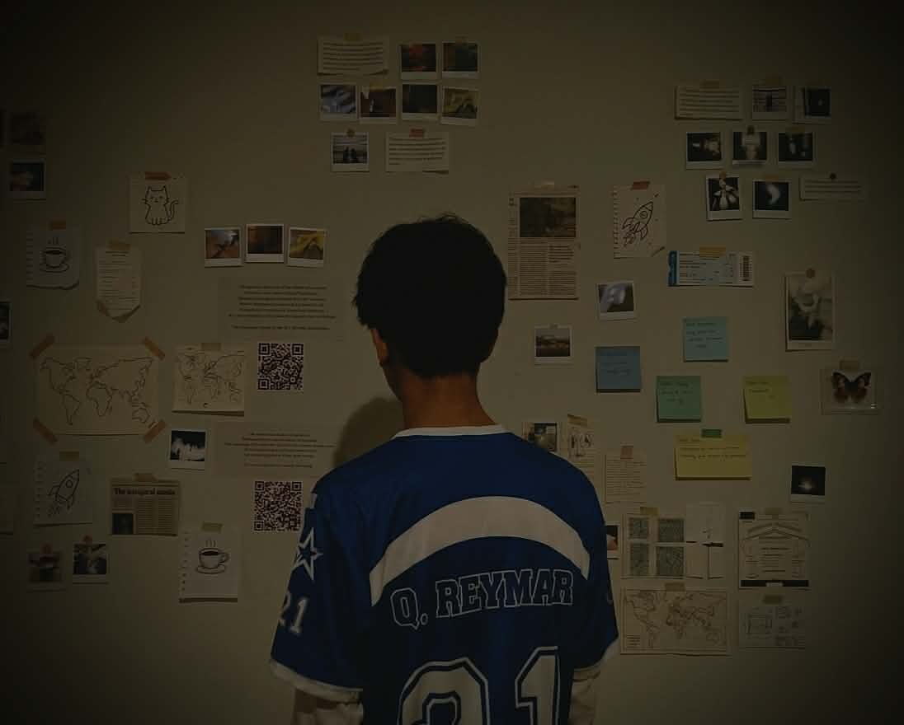
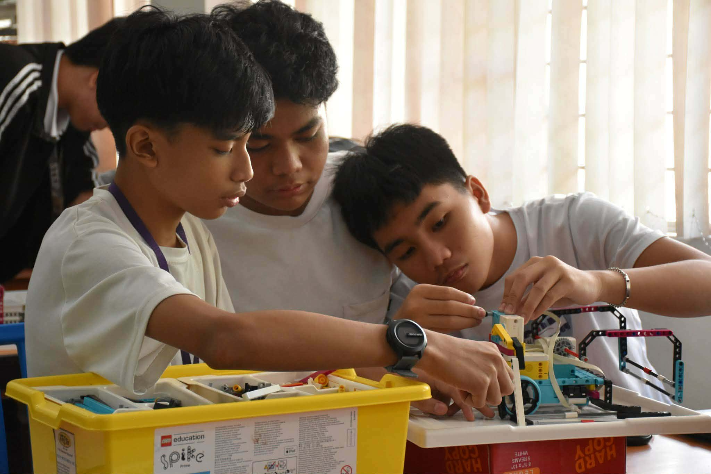
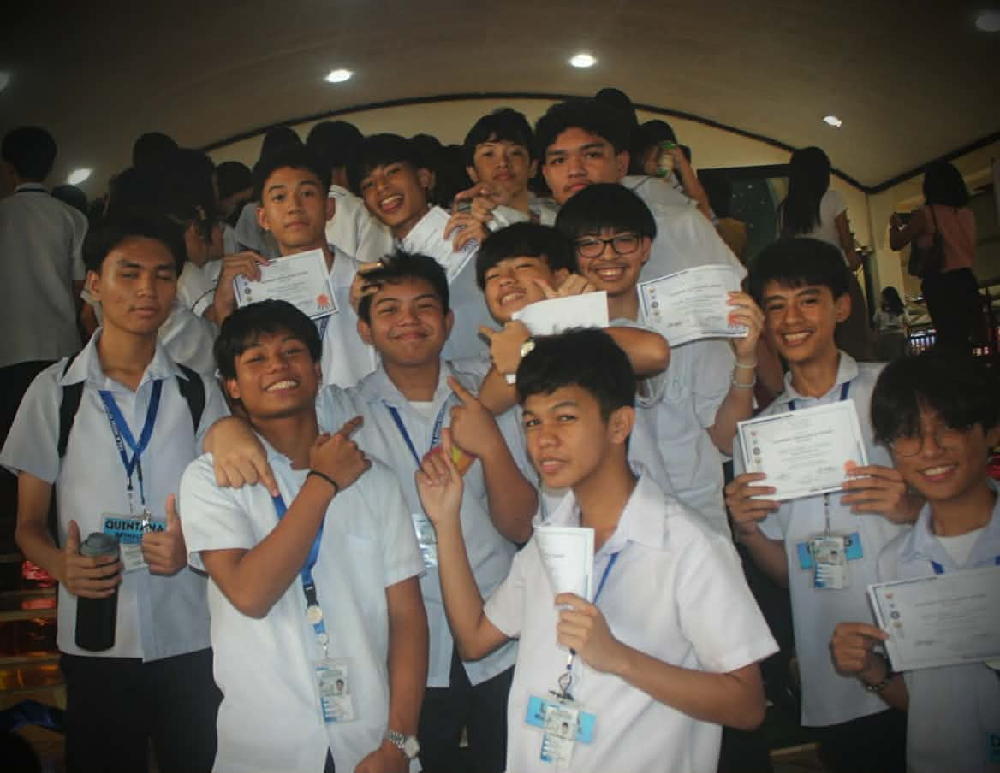
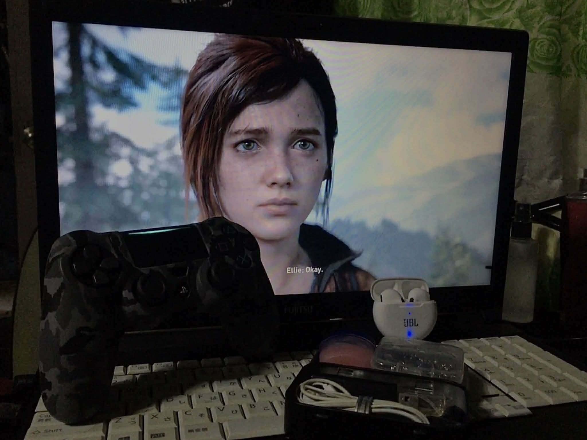
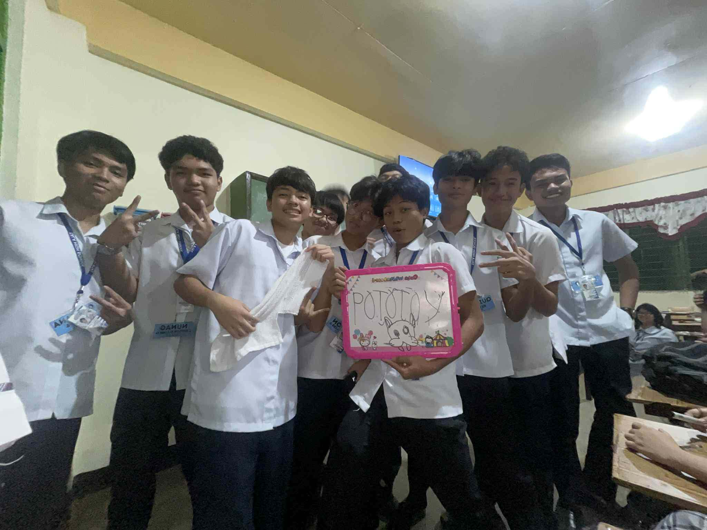

Visionary High School of Science & Technology
Student Profile

Hi! My name is Reymar Quintana, and I am a student of Visionary High School of Science and Technology. I am someone who enjoys learning solely by myself but also together with friends.
I love spending my free time doing the things i love. Playing video games – i love video games especially story-based games because i enjoy stories that are interactable which immersed me the most. Listening to my favorite music has always been my go-to whenever I write notes, doing absolutely nothing, or just in random moments. Watching movies and films is not my thing, sort of — I only watch movies that includes superheroes like DC studios. It can also be movies that are related to games that I play for example The Walking Dead series.
I consider myself a tahimik because I prefer being alone, It's not like I'm shy or introverted or whatever — sometimes I just don't want to engage with people. I can last hours of silence just admiring the view, observing things, or doing absolutely nothing.
I believe that having friends is the greatest strength you can acquire. I know I said I'm not a social person, but if you just find the right people with you, just like I do — it can change everything. For me, it changes my personality more that I could have ever imagined.

My Favorite Memory

With My Friends

My Hobbies

School Memories
I am interested in robotics and engineering. Basically anything related to technologies.
My goal is to finish school to find a suitable job. A job that can sustain me enough to play whichever games I want and build my best gaming PC.